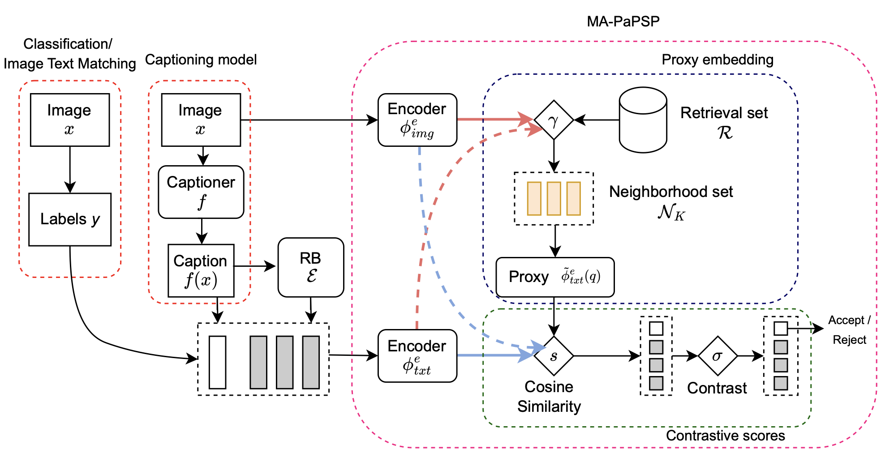
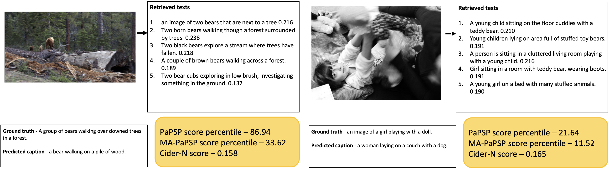
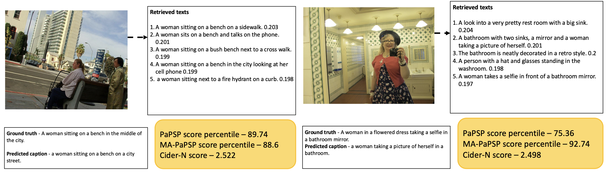
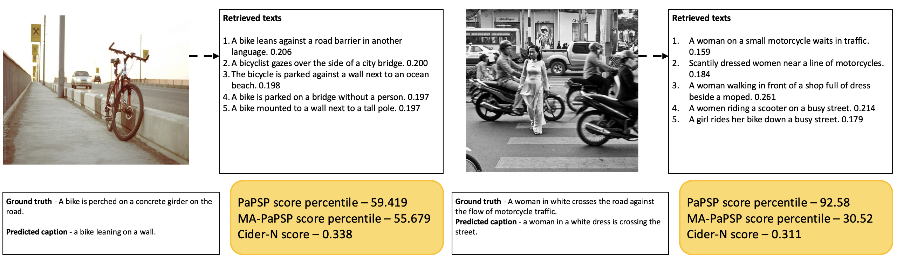
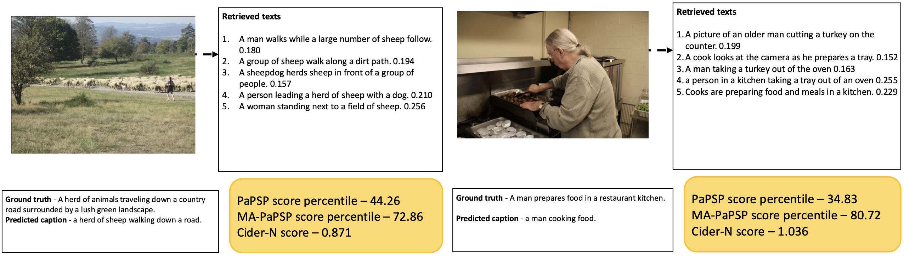

Approach

MA-PaPSP is a model that complements PaPSP with retrieval augmentation as shown above. The corresponding image-text projections are leveraged to address the two problems mentioned in abstract. Overall, the model retrieves relevant image-text pairs from a large retrieval set using a query image (input image), computes a proxy embedding and contrasts it with embeddings of negative captions. It comprises of two blocks and are as follows:
- Proxy embedding: MA-PaPSP first tries to estimate the ground-truth embeddings using a weighted average of retrieved sample embeddings. The weights are determined as the cosine similarity between the query image and the retrieved samples. The result is an embedding of the same size as input image embedding and is called proxy embedding.
- Contrastive scores: Then MA-PaPSP contrasts it with negative captions by performing a softmax operation. For prediction tasks like classification and image-text matching, negative captions are already available; however for generation tasks like captioning, negative captions are absent and as a result, MA-PaPSP either uses a simple wordnet like model or a small language model to curate negative captions. The result of this is a score and can be thresholded to perform abstention or prediction.

Top figure demonstrates the two problems mentioned in the abstract and they are 1) instability of the visual-language representations (shown in a,b) and 2) poor calibration of similarity scores (shown in c,d). MA-PaPSP solves this by using the above mentioned blocks. Bottom figure shows the AURC scores for different thresholds. The lower curve indicates better performance.
Qualitative Results

Example demonstrates both MA-PaPSP and PaPSP accept the inputs.

Example demonstrates MA-PaPSP rejects and PaPSP accepts the inputs.

Example demonstrates both MA-PaPSP and PaPSP reject the inputs.
